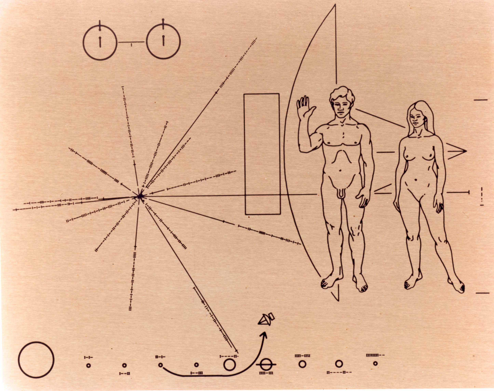
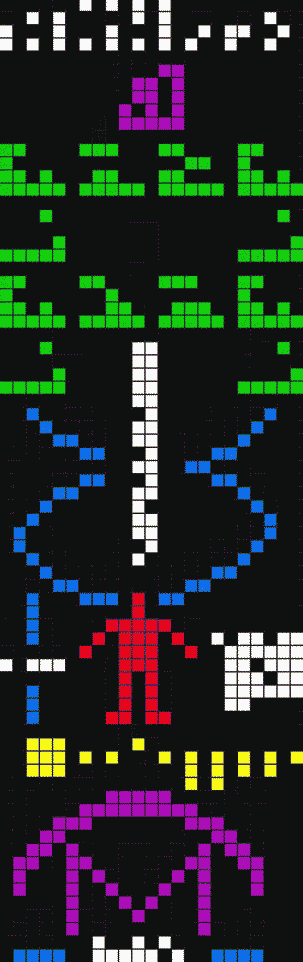

外星人防御计划
1 引子
目前的主流科学界几乎是一致地认为外星人存在但从未到访过地球。
2 上部
| 1877 年 8 月 | 火星大冲，意大利天文学家夏帕雷利（Giovanni Schiaparelli）观测到火星上的细线 |
|---|---|
| 1932 年 | 贝尔实验室发明射电望远镜（radio telescope） |
| 1947 年 6 月 24 日 | 美国商人阿诺德在华盛顿州目击到 9 个碟状飞行物（flying saucer） |
| 1947 年 7 月 4 日 | 美国罗斯威尔（Roswell）镇发现坠毁的飞行器 |
| 1959 年 | 美国物理学家弗里曼·戴森（Freeman Dyson）提出「戴森球」理论（Dyson sphere） |
| 1960 年 | 美国天文学家法兰克·德雷克（Frank Drake）开始「奥兹玛计划」（Project Ozma） |
| 1961 年 | 德雷克提出「SETI 计划」和「德雷克公式」（Drake equation） |
| 1963 年 | 阿雷西博（Arecibo）射电望远镜在波多黎各建成 |
| 1968 年 2 月 | 英国天文学家安东尼·休伊什（Antony Hewish）发现「脉冲星」（pulsar） |
| 1969 年 9 月 | 澳大利亚默奇森（Murchison）镇发现陨石 |
| 1972 年 | 德雷克开始「奥兹玛计划」第二期，在 4 年内监听了 650 多颗恒星 |
| 1974 年 | 德雷克向宇宙发送「阿雷西博信息」（Arecibo message），是人类第一次 METI 行为 |
| 1977 年 8 月 16 日 | 美国射电望远镜分析员发现「Wow 信号」 |
| 编号 | 轨道 | 历程 | 特点 |
|---|---|---|---|
| 水手 1 号 | 1962/07 发射 | 火箭偏离轨道，被空军导弹摧毁 | |
| 水手 2 号 | 1962/08 发射 | 掠过金星 1 年后掠过火星 | |
| 1962/12 金星 | |||
| 火星 1 号（苏联） | 1962/11 发射 | 4 个月后失去联系 | |
| 水手 3 号 | 1964/11 发射 | 失败 | |
| 水手 4 号 | 1964/11 发射 | 传回第一张火星近距照片 | |
| 1965/07 火星 | |||
| 先驱者 10 号 | 1972/03 发射 | 携带先驱者镀金铝板 | |
| 先驱者 11 号 | 1973/04 发射 | 携带先驱者镀金铝板 |
光学望远镜能看多远基本上取决于口径，口径越大收集到的光线越多，就能把更远的物体成像。
宇宙中的天体除了发出可见光以外，还发出大量的不可见光，也就是各种频率的电磁波。射电望远镜通过一个巨大的天线来收集各种频率的电磁波，从而进行分析，可以把电磁波转换成图像和声音两种让人类可以直观感受的形式。
与其说射电望远镜是一个望远镜，倒不如说它是一个超级收音机更为恰当。射电望远镜并不十分复杂，看起来就跟大号的卫星电视接收器一样，原理也差不多。
阿诺德遇见 9 个飞碟的事件成了 UFO 登上历史舞台的开端性事件。从那之后，海量的 UFO 目击报告涌现出来，似乎在一夜之间，地球上就已经充满了外星人。而罗斯威尔事件则真正地使外星人的研究热潮席卷全世界，此后很多年，寻找外星人存在的证据成了从民间团体到正经的学术机构的热门课题。
行星在一颗很亮的恒星边上，会完全隐没在恒星的光团中。所以，想要找到系外行星，必须通过一些手段间接观测。
天体测量法
当一颗行星绕着恒星公转的时候，恒星并不是完全不动的。根据牛顿力学可以推算出，恒星和行星其实是围绕着它们的共同质量中心旋转，这个共同的质量中心被称为「质心」。因此，尽管摆动幅度非常之小，但从理论上来说，恒星是在「抖动」的。如果观测到某颗恒星有规律地抖动，那除了有一颗行星在围绕着它旋转以外，找不出第二个合理的解释。
如果人类能观察到某一颗恒星的亮度在人类活动的时间尺度内逐渐变暗，或者这颗恒星发射出大量具有某种特征的红外辐射的话，那么这个现象就可以确认为是那个恒星系有智慧文明存在的证据。
……一个恒星系文明发展的必然结果，一个文明只要存续，就必然会发展到能采集整个恒星能量的程度，我们通过在银河系中搜索这种「戴森球」带来的效应就能找到已经发展到这类文明高度的外星文明。
这种环日采集器除了会使得恒星的亮度减弱以外，还会有一个更容易被人类现有技术检测到的效应，那就是环日采集器会被太阳加热，从而放出大量的红外辐射。检测这种红外辐射效应会比检测恒星的亮度要容易得多。
1960 年，德雷克使用美国国家无线电天文台的射电望远镜开始了他的第一个正式的地外文明搜寻计划：奥兹玛计划。这是人类历史上第一个由严肃科学家代表官方实施的外星人搜寻计划。
在电磁波的发现者赫兹生活的那个时代，人类就已经知道频率越高则能量衰减得越慢，这就意味着能传递得越远。当然，如果频率太高也会导致信号太弱，频率在 1000 兆赫到 10000 兆赫之间是比较合适的。
在德雷克之前的科学家已经发现，这个宇宙中有一个频率是非常特殊的，那就是波长为 21 厘米的 1420.405 兆赫，这就是被称为「21 厘米线」的宇宙基准频率，它是氢原子发射出来的电磁波频率。
氢是宇宙中数量最多的元素，每 100 个原子中就有 90 多个是氢原子。因此，在宇宙中，21 厘米波无处不在，使得信号太容易被干扰。一束带着智慧文明信号的 21 厘米电磁波如果强度不够，就很容易淹没在宇宙背景噪音中。
科学家麦可维斯基首先建议使用氢波段乘 π，或者乘 2π、3π 等频率，因为 π 这个数字很特殊，在数学上这是个「超越数」，这样的频率在自然中不可能以谐波的形式产生，只有可能是智慧文明所产生，因此氢波段乘 π 在以后的地外文明搜寻计划中就成为最主要的搜索频率。
1961 年，在美国的西弗吉尼亚，人类历史上首次正式的地外文明搜寻大会召开。德雷克提出了一个概念，那就是「搜寻地外文明计划」（Search for Extra-Terrestrial Intelligence），简称「SETI」。
计算「可能与我们通讯的银河系内外星球智慧文明的数量」，简而言之，就是用来计算银河系中能够与我们联络的外星文明有多少的一个公式。
N = R×Fp×Ne×Fl×Fi×Fc×L
N = 银河系内可能与我们通讯的文明数量
R = 银河内恒星形成的速率
Fp = 恒星有行星的可能性
Ne = 位于合适生态范围内的行星的平均数
Fl = 以上行星发展出生命的可能性
Fi = 演化出智慧生物的可能性
Fc = 该智慧生命能够进行通讯的可能性
L = 该智慧文明的预期寿命
因为地球人的出现，可以证明宇宙中出现智慧文明的概率大于 0，这一点是证据确凿的。那么，只要样本空间足够大，宇宙中智慧文明的数量就不会唯一，就会随着样本数量的增大而增大。
传统射电望远镜由于受到材料本身的限制，天线大到一定程度以后，就会被材料的自重压垮。于是人们想到了一个办法，那就是在地上刨一个锅形的大坑，然后把金属材料贴在大坑的表面，这样就形成了一口巨大的固定在地面上的天线。但是从成本的角度考虑，最省钱的方法是利用现成的近似锅形状的山谷。
1963 年，阿雷西博射电望远镜终于建成，它至今仍然是全球口径最大的射电望远镜，口径达到 305 米，在足足有 10 个足球场那么大的抛物面上贴了 38 万片纯铝制成的瓦片。
但是，这种超大型的射电望远镜却有着不能转动朝向同一时间、只能接收一个频率和受建造施工限制的缺点。
从 1994 年开始，我国就在全国范围内寻找一个合适的山谷，建设超大型射电天文望远镜。整整找了 12 年，终于在贵州省的喀斯特洼地，南州平塘县的一个叫做大窝凼（dàng）的地方找到了合适的山谷。2007 年，国家「十一五」重大科学工程—— 500 米口径球面射电望远镜「FAST」项目获国家立项批准，预计 2016 年建成。
接收面积足足有 30 个足球场大小，比起阿雷西博，FAST 的综合性能将提高大约 10 倍，估计至少能把这个世界第一的地位保持 20 至 30 年。
……观测到来自天体的周期性脉冲射电辐射，周期为短而精确的 1.3373011 秒。天文学家形象地将这一天体命名为「脉冲星」。后来人们确信，脉冲星就是快速自转的具有强磁场的中子星。在这样的天体环境里，不会有任何生命存在。
这些至少已经在宇宙中存在了 45 亿年之久的天外来物上布满了氨基酸，并且种类繁多，超过了 74 种，其中只有 8 种是地球上有的种类。这绝对是一个惊天动地的发现，人类第一次在地外的宇宙中找到了构成生命的必须物质。30 多年后，美国加州的埃姆斯研究中心宣布，他们在默奇森陨石中发现了一系列复杂的多羟基化合物，也就是一种「糖」，而这种糖是地球上不曾发现过的。
……数据记录带上明确地显示在氢波段上记录到了一个强烈的持续 72 秒的脉冲信号。经过定位分析，发现这个信号来自人马座附近。全世界的天文学家把望远镜对向了人马座区域，使用 Wow 信号的频率开始监听，但是直到今天我们再也没有在这个方向上收到 Wow 信号。

第 1 部分：氢原子内自旋跃迁。
第 2 部分：太阳相对于银河系中 14 颗脉冲星的位置。线上有一列以二进制形式写上的数字，这表示了银河系中 14 颗脉冲星（中子星）的脉冲讯号周期。线条的长度表示了那些脉冲星相对于太阳的距离。每段线条尾部的记号则表示了其交错于银河平面上的 Z 坐标。第 15 条线则向右伸延到人类绘图之后，这条线表示了太阳与银河系中心的相对距离。
第 3 部分：先驱者探测器的外形轮廓。
第 4 部分：人类的形象。
第 5 部分：太阳系。在每个行星旁的一组二进制数字，是每个行星距离太阳的相对距离。单位等于水星公转轨道的十分之一。
先驱者 10 号和 11 号目前正飞行在距离地球 100 多亿千米的太阳系边缘上。预计它们抵达下一个恒星系的飞行时间都要超过 200 万年。
Message to the Extra-Terrestrial Intelligence，也可以称为「主动 SETI」。
德雷克决定朝「M13」球状星团（武仙座球状星团）发射信号，这是银河系以外的一个星系，这个球状星团在 165 光年直径的一个球形区域中分布了大约 100 多万颗恒星，密度远远超过了银河系的密度，这样就大大增加了中奖概率。M13 离地球十分遥远，有 25000 光年。
阿雷西博信息发送之后，人类在 1999 年、2001 年和 2003 年还有三次大规模的 METI 行动，这三次行动分别叫做「宇宙呼唤 1（Cosmic Call 1）」（俄罗斯）、「青少年信息（Teen Age Message）」（俄罗斯）、「宇宙呼唤 2（Cosmic Call 2）」（美国、俄罗斯、加拿大联合发起）。最先抵达目标的是「宇宙呼唤 2」中的一个发往仙后座 Hip 4872 恒星的信息，抵达时间是 2036 年 4 月。

脉冲的总数量设计为 1679 个，这个数字只能分解为 23 和 73 两个质数的乘积。如果断成 23 行，那么整个信号就会变成一种白噪声。
第 1 部分：数字。从左到右，依次用二进制来表示数字 1 到 10，第四行是表示起始位置，后面凡是表达数字的地方都会把第一位打成实心的表示起始位。
第 2 部分：五种化学元素的原子序数。从左到右分别是：氢（1）、碳（6）、氮（7）、氧（8）、磷（15）。
第 3 部分：五种元素构成的生命物质——核苷酸。这 12 种有机分子是人类发现的构成一切生命物质的基础。第 1 行：去氧核糖（Deoxyribose，C5OH7）、腺嘌呤（Adenine，C5H4N5）、胸腺嘧啶（Thymine，C5H5N2O2）、去氧核糖（Deoxyribose，C5OH7）。第 2 行：磷酸盐（Phosphate，PO4）、磷酸盐（Phosphate，PO4）。第 3 行：去氧核糖（Deoxyribose，C5OH7）、胞嘧啶（Cytosine，C4H4N3O）、鸟嘌呤（Guanine，C5H4N5O）、去氧核糖（Deoxyribose，C5OH7）。第 4 行：磷酸盐（Phosphate，PO4）、磷酸盐（Phosphate，PO4）。
第 4 部分：DNA 的双螺旋结构。上面的 12 种最基本的生命分子组合成了双螺旋结构。中间是一个很大的数字，代表着一个 DNA 中核苷酸的总数量，4294441823。
第 5 部分：DNA 构成了人类。为了使表示身高的这个数字产生实际的意义，必须以一个双方都理解的长度作为参照物。而在这个电磁波中，有一个天然的长度参照物，那就是波长，12.6 厘米。数字 14 表示人类的身高是波长的 14 倍，也就是 176.4 厘米。小人右边的数字，4292853750，是 1974 年全球人口数量。
第 6 部分：太阳系。
第 7 部分：阿雷西博。下面表示了阿雷西博的口径，这个数字是 2430，表示波长的 2430 倍，也就是 306.18 米。